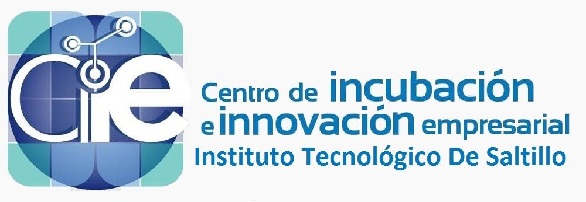

Emprendimiento

¿Sabes qué es la incubadora de empresas?
Es un centro de apoyo que ayuda a iniciar tu empresa. La incubadora se encarga de evaluar la factibilidad de tu proyecto empresarial, también proporciona servicios de asesoría legal y administrativa, así como planes de mercadotecnia y ventas, gestiona el financiamiento del proyecto.
La incubación promueve elementos y competencias tales como:
- El desarrollo de una cultura emprendedora.
- La generación de nuevas empresas.
- El desarrollo tecnológico, la innovación y la generación de valor agregado en la producción de bienes y servicios.